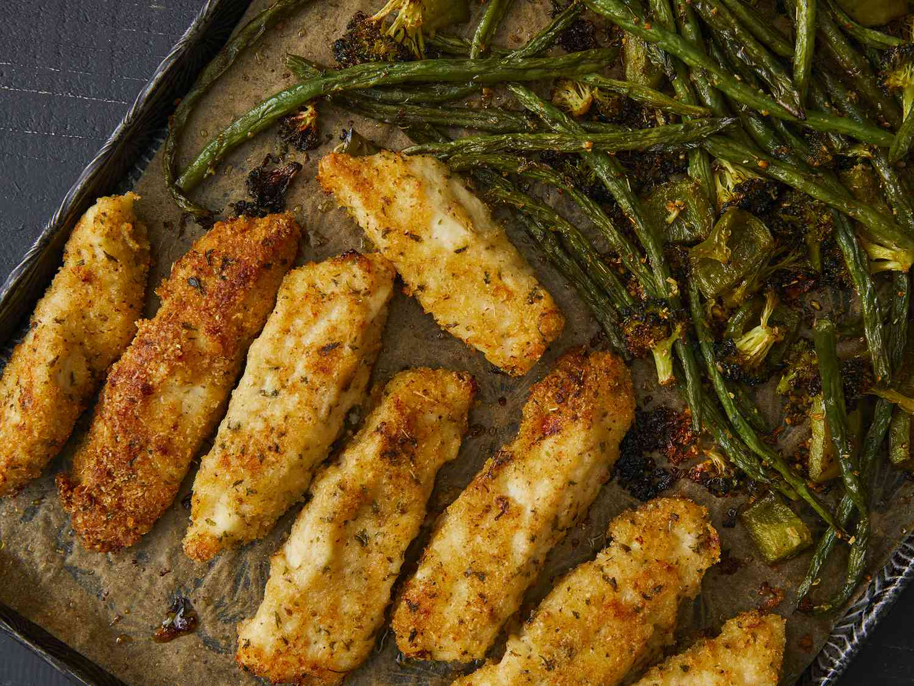

Sheet Pan Parmesan Chicken and Veggies

This extra-crispy sheet pan chicken and veggies dinner is baked on one pan and packed with flavor!
Ingredients:
- 1 tablespoon dried oregano
- 1 tablespoon dried parsley
- 1 teaspoon paprika
- ½ teaspoon garlic powder
- ¼ teaspoon seasoned salt, or to taste
- ¼ teaspoon ground black pepper, or to taste
- ½ pound fresh green beans, trimmed
- 1 small red potato, diced
- 1 sweet bell pepper, chopped
- 1 cup broccoli florets, chopped
- 1 tablespoon minced garlic
- 3 tablespoons olive oil
- ⅓ cup all-purpose flour
- 4 tablespoons butter, melted
- 1 cup panko bread crumbs
- 1 cup freshly grated Parmesan cheese, divided
- 1 ½ pounds skinless, boneless chicken breasts, pounded flat and excess fat removed
Directions
- Preheat the oven to 400 degrees F (200 degrees C). Line a sheet pan with parchment paper.
- Combine oregano, parsley, paprika, garlic powder, seasoned salt, and pepper in a small bowl.
- Place green beans, potato, bell pepper, broccoli, and garlic onto the prepared sheet pan. Drizzle with olive oil and sprinkle with 1/2 of the seasoning mix; toss to coat.
- Place flour into a bowl. Place melted butter into a second bowl. Mix panko, 2/3 cup Parmesan cheese, and the remaining seasoning mix together in a third bowl.
- Slice chicken into 1 1/4-inch strips, then coat in flour. Dredge floured strips in melted butter, dripping excess butter back into the bowl. Press into Parmesan-panko mixture until heavily coated on both sides.
- Push veggies to one half of the sheet pan. Place coated chicken strips onto the other side. Sprinkle any remaining Parmesan-panko mixture over chicken, pressing to adhere.
- Bake in the preheated oven for 10 minutes. Flip chicken strips and stir veggies, then continue to bake until chicken juices run clear and veggies are crisp-tender, 10 to 15 more minutes. An instant-read thermometer inserted into the center of the chicken should read at least 165 degrees F (74 degrees C).
- Meanwhile, make the dipping sauce: Whisk mayonnaise, ketchup, garlic powder, and Worcestershire sauce together in a small bowl.
- Remove chicken and veggies from the oven. Toss veggies with remaining 1/3 cup Parmesan cheese. Serve with dipping sauce.